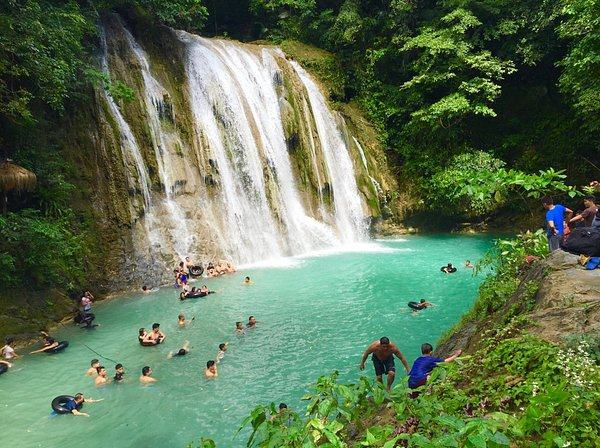
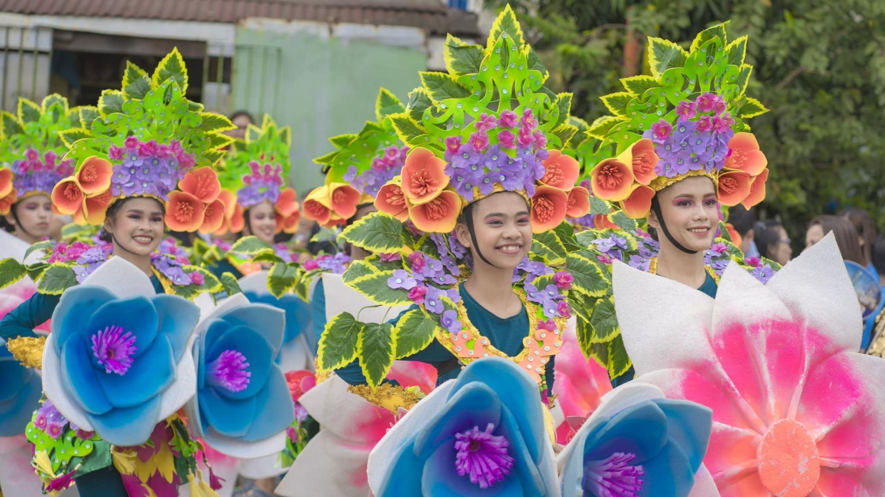
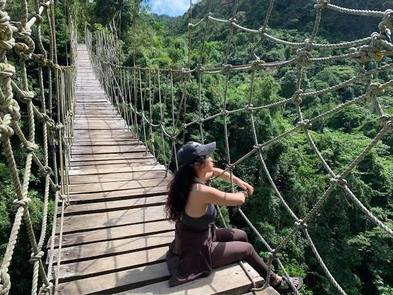

Waterfalls and Rivers
Swim or relax by natural pools at Daranak Falls, Batlag Falls, and the crystal-clear waters of Tinipak River
 ●
●
Tanay Offers a perfect mix of natural beauty, culture, and exciting adventures fot every travelers

Swim or relax by natural pools at Daranak Falls, Batlag Falls, and the crystal-clear waters of Tinipak River

Celebrated annually (typically in November) to mark the town's founding, featuring art exhibits, cultural youth parades, local food bazaars

Crossing or viewing the bridges gives you a sweeping vantage point of the winding rivers
EXPLORATION
Tanay, Rizal is a premier eco-adventure and cultural destination in the Philippines, renowned for its spectacular cascading waterfalls, and deeply rooted history
NATURE
For nature lovers and outdoor enthusiasts, Masungi Georeserve is a must-visit Tanay Philippines tourist spot. This unique and breathtaking conservation area boasts a range of trails.
FESTIVALS
The province of Rizal in the Philippines hosts several vibrant cultural and religious festivals celebrated across its different municipalities and cities.
CULTURE
The vibrant Hane Festival and the historic Saint Ildefonsus of Toledo Parish showcase the rich blend of indigenous Dumagat traditions, Spanish-era heritage, and community arts that define the culture of Tanay, Rizal.

THE EXPERIENCE
The festival highlights the town's eco-tourism, your trip naturally pairs with exploring Tanay's spectacular year-round natural assets. You can hit the festival in the town plaza during the day and easily take side-trips to go trail running, chase waterfalls at Daranak Falls, or camp out at the sea of clouds in the Sierra Madre mountain ridges.

Discover the wide, open skies that turn Tanay into a paradise at sunrise and sunset, where golden light spills over the peaks and paints the clouds in soft shades of pink, orange, and lavender.